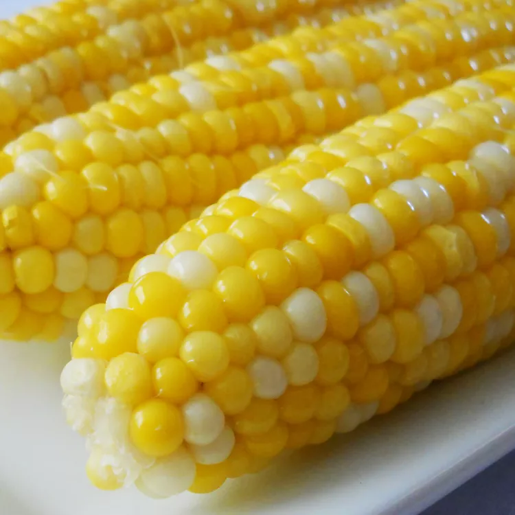

Jamie's Sweet and Easy Corn on the Cob

What to Serve With Corn on the Cob
Boiled corn on the cob pairs perfectly with all your standard summer fare. In need of some serving inspiration? Explore
these mouthwatering recipe collections to learn what goes with corn on the cob:
Ingredients
- 2 tablespoons white sugar
- 1 tablespoon lemon juice
- 6 ears conrn on the cob, husks and silk removed
Directions
- Step 1
- Fill a large pot about 3/4 full of water and bring to a boil. Stir in sugar and lemon juice until sugar is dissolved.
- Step 2
- Gently place ears of corn into boiling water, cover the pot, turn off the heat, and let corn cook in the hot water until tender, about 10 minutes.